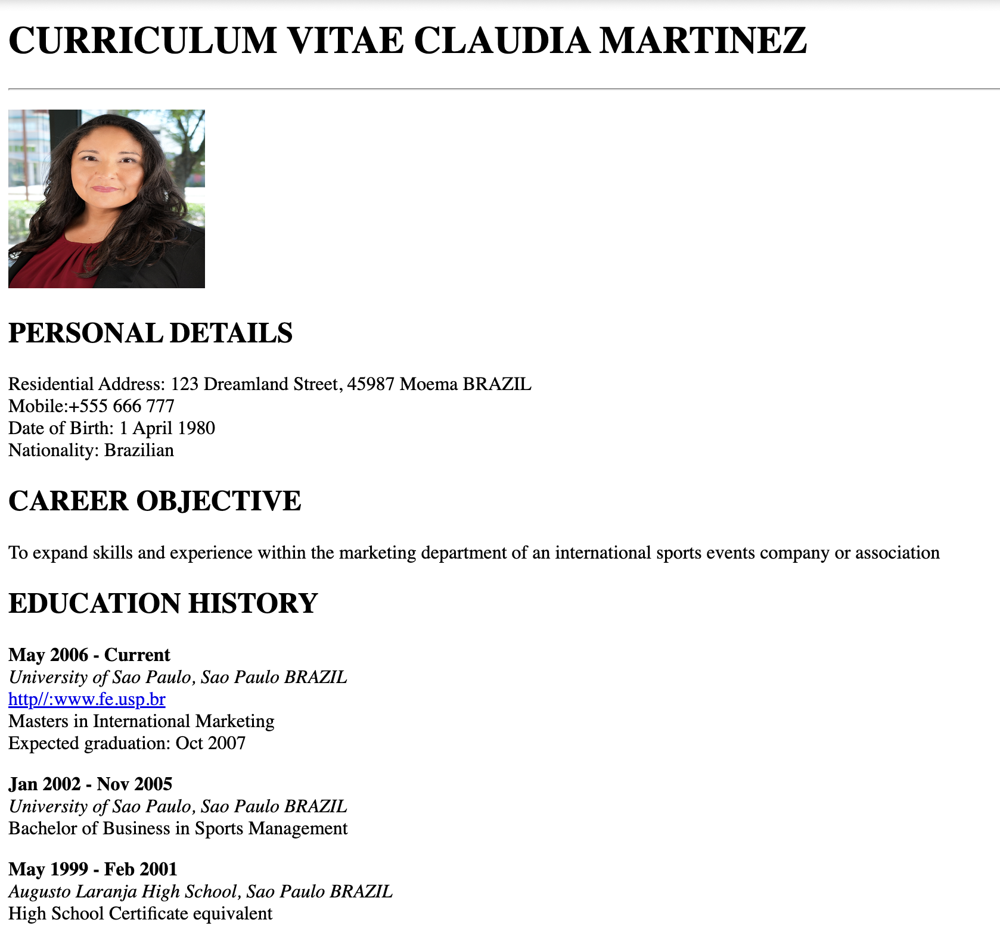
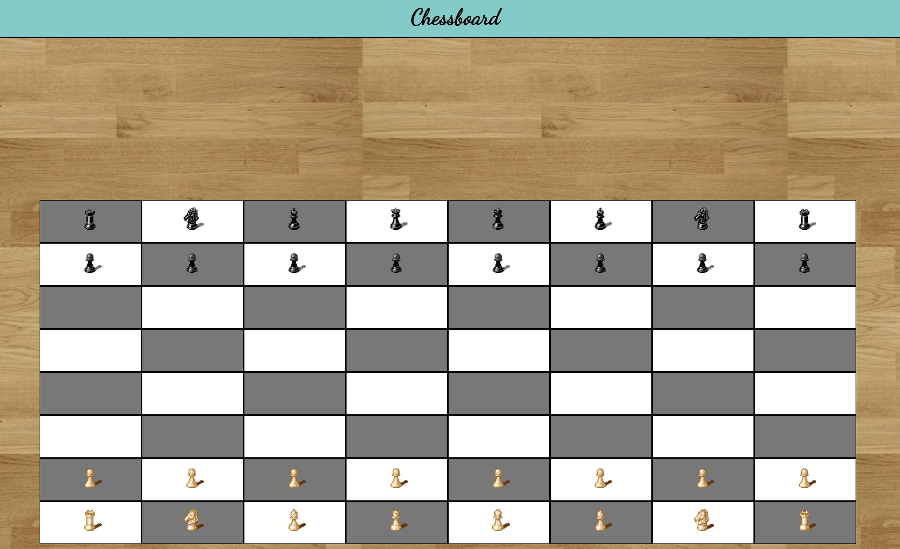

My first artifact is a fake resume I created. Within this assingment you were supposed to incorporate h1, ul's, li's, and a ref's to complete this assingment. It wasn't very challenging however it did take a lot of time to complete. There was no CSS included within this.
Here is a small screenshot of what it looks like.
My second artifact is a chessboard which was by far the most challenging artifact i've done in this class. Trying to get everything to be the correct size was the challenging part but what the most annoying thing was the load time of the website, each time i saved the code on github it would take a while for it to actually change on the website.
Here is a small screenshot of what it looks like.
